European fuses and vintage breakers
Fuse boxes in Europe could vary considerably between countries; the de-facto standard, however, were the Diazed fuses, a cartridge-based system invented in Germany in the early 1900s which was popular for more than half a century. Their basic design was later adapted into the much smaller Neozed fuses, which are still occasionally used today for some applications.
In the UK, on the other hand, pre-made fuse boxes (made by companies such as Wylex or MEM) with rewireable fuses were by far the most common. Rewireable fuses were also extensively used in Italy and France.
Diazed fuses
The Diazed system, originally created in 1906 in Germany by Siemens, was extremely popular in continental Europe. In fact, despite its age, parts and replacement fuses for them are still readily available to this day. Diffrerent types of Diazed fuse exist, depending on their maximum amperage; the DII size is the most common and has a maximum rating of 25A.
A Diazed fuse holder is formed of a few different parts: the holder has an E27 Edison screw socket, like the one found on light fixtures. Unlike some other fuse systems, the fuse cartridge doesn't screw onto the Edison socket, but is instead placed inside a special cap which is then screwed into the socket.
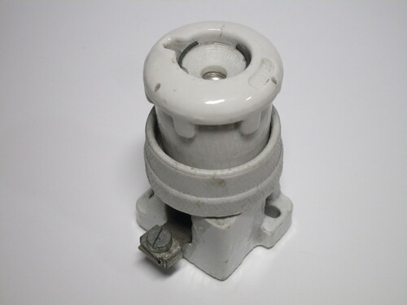{kind=link}
 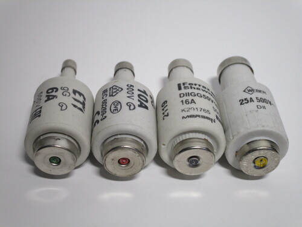
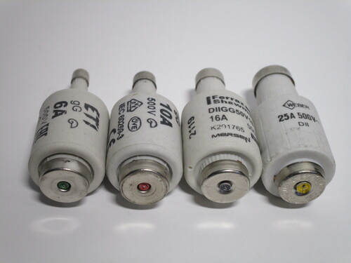
{kind=link}
The cartridges are shaped like a bottle, with the neck having a different thickness depending on its rated current. Fuse holders have a matching gauge ring, only removable with a special tool, which prevents a fuse with a higher rating from being inserted.
Once the fuse is blown, a small spring-loaded button present at the end pops out and can be seen from the glass window in front of the cap, to make it easier to find which one needs to be replaced. The colour of the button varies according to its current, and is also present on the gauge ring inside the fuse holder. The most common colours are red for 10A, grey for 16A and yellow for 25A.
Vintage Diazed replacement breaker
This is a very early example of an item readily found in hardware stores today: a Diazed replacement breaker. These are small breakers designed to substitute a Diazed fuse cap and cartridge, to help reduce the inconvenience of a blown fuse.
The breaker, manufactured by Siemens, has a reset button to turn the power back on, as well as a small red button to manually switch it off. Text moulded on the front indicates its rated current of 6A.
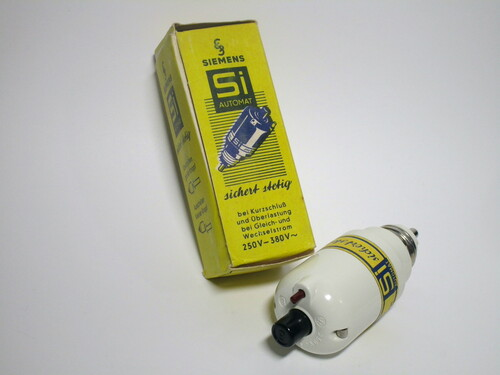 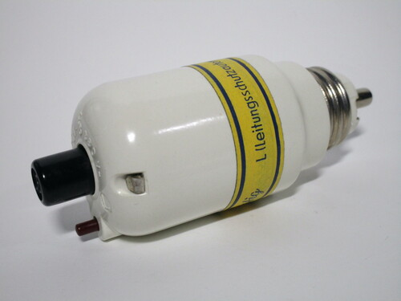 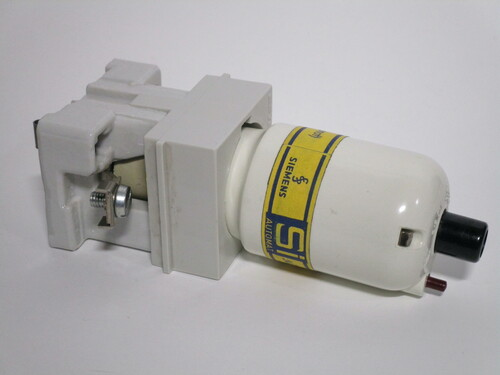{kind=link}
{kind=link}
{kind=link}
DIII fuse holder
This is a vintage three-phase fuse holder, made by the Italian manufacturer Cafrullo, which accepts three DIII fuses up to 63A, for a maximum load of 43kW. Given this, it's highly likely that this was originally intended for industrial applications.
While Diazed fuses were rarely used for residential installations in Italy, they were more common in industrial and commercial settings, especially for machinery. Notably, this model doesn't have any sort of way to install a gauge ring, and instead has a solid metal piece - as such, it's possible to install any size of fuse in it.

 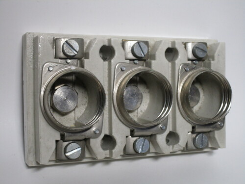
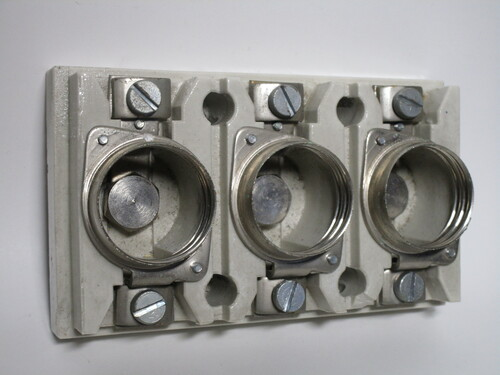
{kind=link}
Neozed fuses
The Neozed standard of fuses was designed as a replacement to the Diazed system, though it never managed to be as popular. Nevertheless, in some countries it did slowly replace it in new installations.
Their design is very similar to Diazed fuses, with a cap that the cartridge slots into which then screws onto an Edison socket. Different sizes exist, though in practice only two are commonly used: D01 fuses are rated up to 16A and use an E14 thread, while D02 fuses are rated up to 63A and use an E18 thread.
Neozed fuses and fuse holders are still available nowadays and, while hardly ever installed for ordinary circuits, they're still used as main fuses on breaker panels in Germany and Austria.
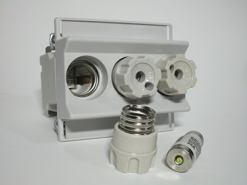 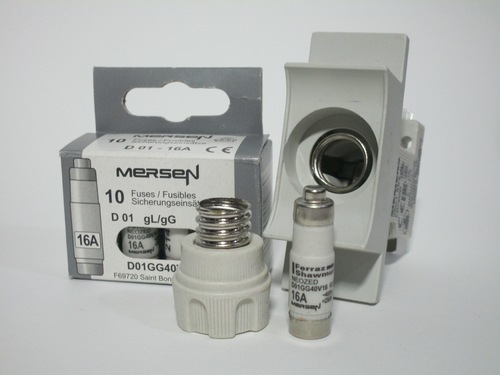 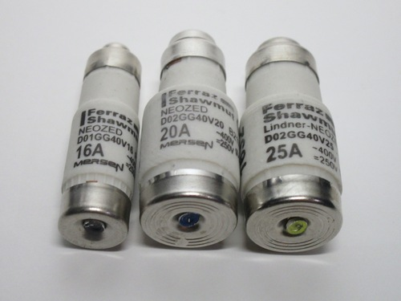{kind=link}
{kind=link}
{kind=link}
East German DL fuses
The DL fuse system was a standard specific to the GDR, created as a smaller successor to the Diazed system, using a 16mm Edison socket.
Its design is very similar to the Neozed D01 fuses, but with a rating of 20A rather than 16, to the extent that Neozed fuse cartridges will fit into DL holders, aside from the 20A one which is a special size. Replacement DL fuses are still manufactured nowadays for old installations.
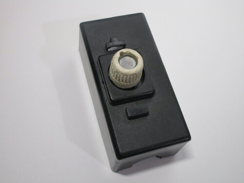 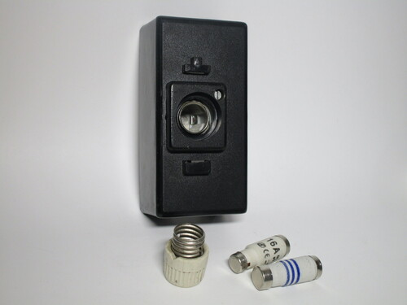 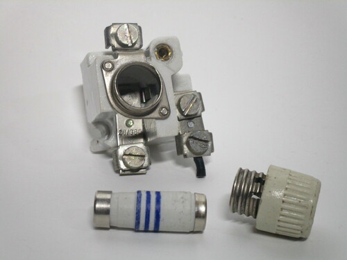{kind=link}
{kind=link}
{kind=link}
The bakelite fuse holder shown here is able to hold one DL fuse. Opening it up is done by removing the fuse and one screw holding the cover on. The inside is made of a ceramic-style material, as was common back then.
This ceramic block is also where the wire terminals are found, for the line and load sides of the fuse as well as a small neutral block, where a remnant of wire is still attached.
Old Busch-Jaeger DIN rail breaker
This is a very early example of a circuit breaker mountable to a DIN rail, made by Busch-Jaeger. Contrary to modern breakers, this uses buttons to turn the power on or off rather than a lever, like the replacement Diazed breaker shown before. Note that the trip current (20A) is moulded directly onto the "on" button.
The device came in a colourful box with a manual explaining how to mount it to the DIN rail (since it would have been a novelty at the time). Oddly, it's 1.5 modules wide, unlike modern single-pole breakers that only take up one module.
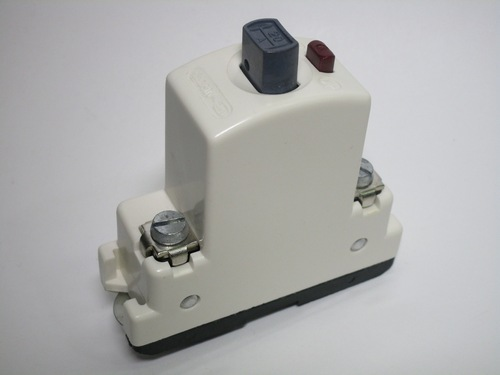 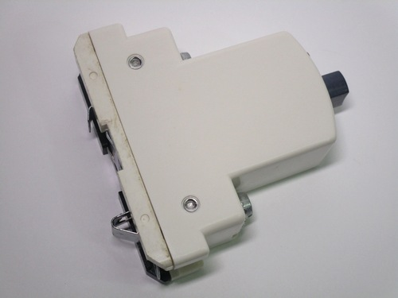 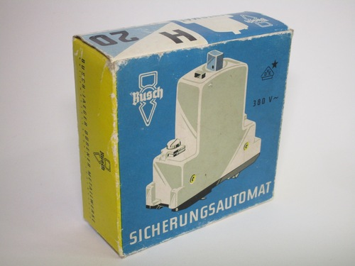{kind=link}
{kind=link}
{kind=link}